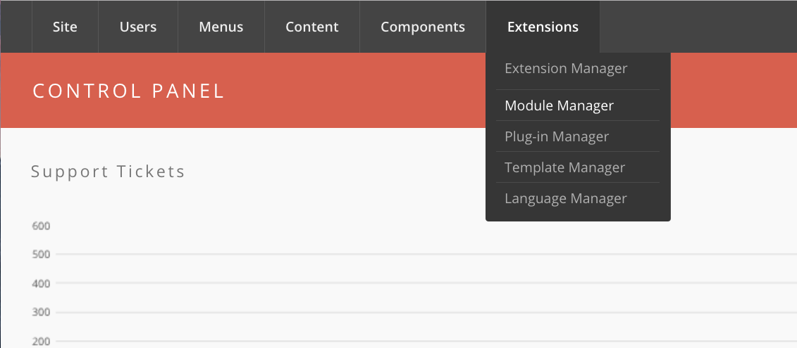
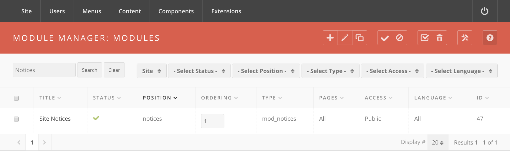

Hub managers
Site Notices
A site notice is the banner that warns visitors the hub is going down for
maintenance, or that something is broken. It is not a component — it is the
mod_notices module, and you post a notice by editing that module.
Finding the module
- Log in to
/administrator. - Go to Extensions → Module Manager.

- Find the notices module. Filter by position, type, or state, or type
noticesinto the search box. The module's type ismod_noticesand it belongs in the notices position. - Click the module's title to edit it.

If no such module exists yet, select New, pick Site Notices from the
module type list, and set its position to notices.
Details
Most of the Details fieldset can be left alone. Two fields matter:
- Position — must be
notices. Every stock template (hubzero,kimera,lucent) declares that position; nothing renders the module anywhere else. - Start Publishing and Finish Publishing — the window during which the notice appears. Leave either empty for no bound. These are the module's own publishing dates, in the Details fieldset, not module parameters.
Also in Details: Status (published or unpublished), Access, and Ordering. A notice that is unpublished never shows, regardless of its dates.
Parameters
The notice's content and appearance live in the module's Basic options:
| Parameter | Label | Default | What it does |
|---|---|---|---|
message |
Message | empty | The notice text. HTML is allowed |
alertlevel |
Alert level | low |
low, medium, or high. Sets the banner's colour class |
moduleid |
Module ID | empty | A CSS id put on the module's container, for per-notice styling |
allowClose |
Allow closing | No | Gives the notice a close link |
autolink |
Autolink message | Yes | Turns bare URLs and email addresses in the message into links |
Alert level becomes a class name on the wrapper — modnotices low,
modnotices medium, modnotices high — and the template decides what each
one looks like. High is the loud one.
Allow closing stores the dismissal per visitor. If a Finish Publishing date is set, the close link carries the number of days left so the dismissal expires with the notice.
Menu assignment
The Menu Assignment tab decides which pages show the notice:
| Option | Effect |
|---|---|
| On all pages | Everywhere. This is what a maintenance notice wants |
| No pages | Nowhere — the notice is effectively off |
| Only on the pages selected | Just the ticked menu items |
| On all pages except those selected | Everywhere but the ticked menu items |
Save with Save or Save & Close.
Rewritten and checked against 2.4-main @ 123ea53b14 on 2026-09-09.